Gene set testing for Illumina HumanMethylation Arrays
Evaluating the functionality and performance of GOregion
Jovana Maksimovic, Alicia Oshlack and Belinda Phipson
August 25, 2020
Last updated: 2020-08-25
Checks: 7 0
Knit directory: methyl-geneset-testing/
This reproducible R Markdown analysis was created with workflowr (version 1.6.2). The Checks tab describes the reproducibility checks that were applied when the results were created. The Past versions tab lists the development history.
Great! Since the R Markdown file has been committed to the Git repository, you know the exact version of the code that produced these results.
Great job! The global environment was empty. Objects defined in the global environment can affect the analysis in your R Markdown file in unknown ways. For reproduciblity it's best to always run the code in an empty environment.
The command set.seed(20200302) was run prior to running the code in the R Markdown file. Setting a seed ensures that any results that rely on randomness, e.g. subsampling or permutations, are reproducible.
Great job! Recording the operating system, R version, and package versions is critical for reproducibility.
Nice! There were no cached chunks for this analysis, so you can be confident that you successfully produced the results during this run.
Great job! Using relative paths to the files within your workflowr project makes it easier to run your code on other machines.
Great! You are using Git for version control. Tracking code development and connecting the code version to the results is critical for reproducibility.
The results in this page were generated with repository version 0699044. See the Past versions tab to see a history of the changes made to the R Markdown and HTML files.
Note that you need to be careful to ensure that all relevant files for the analysis have been committed to Git prior to generating the results (you can use wflow_publish or wflow_git_commit). workflowr only checks the R Markdown file, but you know if there are other scripts or data files that it depends on. Below is the status of the Git repository when the results were generated:
Ignored files:
Ignored: .DS_Store
Ignored: .Rhistory
Ignored: .Rproj.user/
Ignored: analysis/figures.nb.html
Ignored: code/.job/
Ignored: code/old/
Ignored: data/.DS_Store
Ignored: data/annotations/
Ignored: data/cache-intermediates/
Ignored: data/cache-region/
Ignored: data/cache-rnaseq/
Ignored: data/cache-runtime/
Ignored: data/datasets/GSE110554-data.RData
Ignored: data/datasets/SRP125125/SRR6298258/
Ignored: data/datasets/SRP125125/SRR6298271/
Ignored: data/datasets/SRP125125/SRR6298273/
Ignored: data/datasets/SRP125125/SRR6298278/
Ignored: data/datasets/SRP125125/SRR6298281/
Ignored: data/datasets/SRP125125/SRR6298284/
Ignored: data/datasets/SRP125125/SRR6298286/
Ignored: data/datasets/SRP125125/SRR6298299/
Ignored: data/datasets/SRP125125/SRR6298302/
Ignored: data/datasets/SRP125125/SRR6298307/
Ignored: data/datasets/SRP125125/SRR6298310/
Ignored: data/datasets/SRP125125/SRR6298313/
Ignored: data/datasets/SRP125125/SRR6298315/
Ignored: data/datasets/SRP125125/SRR6298328/
Ignored: data/datasets/SRP125125/SRR6298331/
Ignored: data/datasets/SRP125125/SRR6298336/
Ignored: data/datasets/SRP125125/SRR6298339/
Ignored: data/datasets/SRP125125/SRR6298342/
Ignored: data/datasets/SRP125125/SRR6298344/
Ignored: data/datasets/SRP125125/SRR6298365/
Ignored: data/datasets/SRP125125/SRR6298370/
Ignored: data/datasets/SRP125125/SRR6298373/
Ignored: data/datasets/SRP125125/SRR6298376/
Ignored: data/datasets/SRP125125/SRR_Acc_List.txt
Ignored: data/datasets/SRP125125/SRR_Acc_List_Full.txt
Ignored: data/datasets/SRP125125/SraRunTable.txt
Ignored: data/datasets/SRP125125/multiqc_data/
Ignored: data/datasets/SRP125125/multiqc_report.html
Ignored: data/datasets/SRP125125/quants/
Ignored: data/datasets/TCGA.KIRC.rds
Ignored: data/genesets/BROAD-sets.rds
Ignored: data/misc/
Ignored: output/.DS_Store
Ignored: output/FDR-analysis/
Ignored: output/cache-rnaseq/
Ignored: output/compare-methods/
Ignored: output/figures/
Ignored: output/methylgsa-params/
Ignored: output/random-cpg-sims/
Note that any generated files, e.g. HTML, png, CSS, etc., are not included in this status report because it is ok for generated content to have uncommitted changes.
These are the previous versions of the repository in which changes were made to the R Markdown (analysis/07_regionAnalysis.Rmd) and HTML (docs/07_regionAnalysis.html) files. If you've configured a remote Git repository (see ?wflow_git_remote), click on the hyperlinks in the table below to view the files as they were in that past version.
| File | Version | Author | Date | Message |
|---|---|---|---|---|
| Rmd | 0699044 | JovMaksimovic | 2020-08-25 | wflow_publish("analysis/07_regionAnalysis.Rmd") |
| html | bbf77e1 | JovMaksimovic | 2020-08-21 | Build site. |
| Rmd | e3b14f4 | JovMaksimovic | 2020-08-21 | wflow_publish(c("analysis/01_exploreArrayBiasEPIC.Rmd", "analysis/02_exploreArrayBias450.Rmd", |
| html | 555069b | JovMaksimovic | 2020-08-14 | Build site. |
| Rmd | 91699a8 | JovMaksimovic | 2020-08-14 | wflow_publish("analysis/_site.yml", republish = TRUE, all = TRUE) |
| Rmd | 39bdd22 | JovMaksimovic | 2020-08-14 | Renamed analysis files with numbering for run order. |
library(here)
library(ChAMP)
library(minfi)
library(paletteer)
library(limma)
library(BiocParallel)
library(reshape2)
library(DMRcate)
library(missMethyl)
library(ggplot2)
library(glue)
library(UpSetR)
library(dplyr)
library(patchwork)
library(tibble)
library(grid)
library(ggupset)
library(ggpubr)
library(TxDb.Hsapiens.UCSC.hg19.knownGene)
source(here("code/utility.R"))Load data
We are using publicly available EPIC data GSE110554 generated from flow sorted blood cells. The data is normalised and filtered (bad probes, multi-mapping probes, SNP probes, sex chromosomes).
# load data
dataFile <- here("data/datasets/GSE110554-data.RData")
if(file.exists(dataFile)){
# load processed data and sample information
load(dataFile)
} else {
# get data from experiment hub, normalise, filter and save objects
readData(dataFile)
# load processed data and sample information
load(dataFile)
}Statistical analysis
Compare several sets of sorted immune cells. Consider results significant at FDR < 0.05 and delta beta ~ 10% (~ lfc = 0.5).
mVals <- getM(fltGr)
bVals <- getBeta(fltGr)design <- model.matrix(~0+targets$CellType)
colnames(design) <- levels(factor(targets$CellType))
fit <- lmFit(mVals, design)
cont.matrix <- makeContrasts(CD4vCD8=CD4T-CD8T,
MonovNeu=Mono-Neu,
BcellvNK=Bcell-NK,
levels=design)
fit2 <- contrasts.fit(fit, cont.matrix)
tfit <- eBayes(fit2, robust=TRUE, trend=TRUE)
tfit <- treat(tfit, lfc = 0.5)
pval <- 0.05
fitSum <- summary(decideTests(tfit, p.value = pval))
fitSum CD4vCD8 MonovNeu BcellvNK
Down 5072 9324 34803
NotSig 725611 712480 667559
Up 3202 12081 31523Find differentially methylated regions
Identify differentially methylated regions using the DMRcate package.
outDir <- here::here("data/cache-region")
if (!dir.exists(outDir)) dir.create(outDir)
outFile <- here("data/cache-region/dmrcate-results.rds")
if(!file.exists(outFile)){
dmrList <- vector("list", ncol(cont.matrix))
for(i in 1:ncol(cont.matrix)){
cpgAnn <- cpg.annotate("array", mVals, what = "M", arraytype = "EPIC",
analysis.type = "differential", design = design,
contrasts = TRUE, cont.matrix = cont.matrix,
coef = colnames(fitSum)[i])
dmrList[[i]] <- extractRanges(dmrcate(cpgAnn))
}
names(dmrList) <- colnames(cont.matrix)
saveRDS(dmrList, file = outFile)
} else {
dmrList <- readRDS(outFile)
}dat <- rownames_to_column(melt(sapply(dmrList, length)), var = "contrast")
dat$filtering = "before"
for(i in 1:length(dmrList)){
keep <- (abs(dmrList[[i]]$meandiff) > 0.1 & dmrList[[i]]$no.cpgs >=3)
dat <- bind_rows(dat, data.frame(contrast = names(dmrList)[i],
value = length(dmrList[[i]][keep, ]),
filtering = "after",
stringsAsFactors = FALSE))
}
p <- ggplot(dat, aes(x = contrast, y = value, fill = filtering)) +
geom_bar(stat = "identity", position = "dodge") +
labs(x = "Contrast", y = "No. DMRs", fill = "Filtering")
p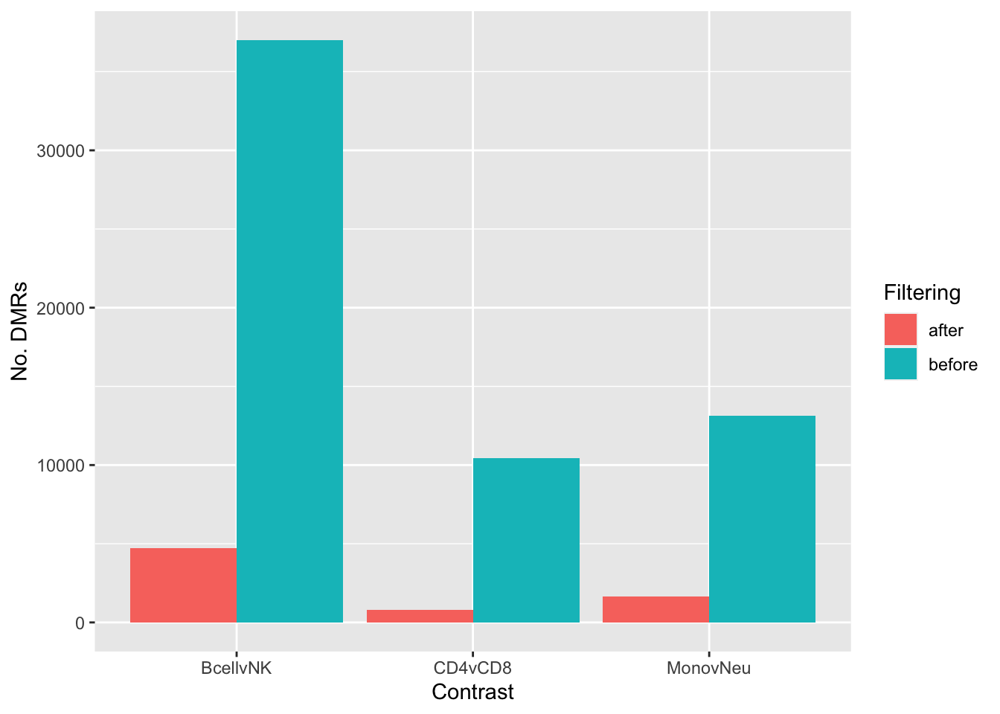
| Version | Author | Date |
|---|---|---|
| 555069b | JovMaksimovic | 2020-08-14 |
Save figure for use in manuscript.
outDir <- here::here("output/figures")
if (!dir.exists(outDir)) dir.create(outDir)
fig <- here("output/figures/Fig-5B.rds")
saveRDS(p, fig, compress = FALSE)GO analysis of DMRs
Run GO analysis on the differentially methylated regions (DMRs) identified by DMRcate for each of the contrasts.
outFile <- here("data/cache-region/dmrcate-go.rds")
anno <- loadAnnotation(arrayType = "EPIC")
txdb <- TxDb.Hsapiens.UCSC.hg19.knownGene
hg19Genes <- GenomicFeatures::genes(txdb)
dmrGo <- NULL
if(!file.exists(outFile)){
for(i in 1:length(dmrList)){
keep <- (abs(dmrList[[i]]$meandiff) > 0.1 & dmrList[[i]]$no.cpgs >=3)
overlaps <- findOverlaps(hg19Genes, dmrList[[i]][keep, ],
minoverlap = 1)
sigGenes <- hg19Genes$gene_id[from(overlaps)]
tmp <- topGO(goana(sigGenes, universe = hg19Genes$gene_id),
number = Inf)
tmp <- rownames_to_column(tmp, var = "GO")[, c("GO", "P.DE")]
tmp$method <- "goana"
tmp$contrast <- colnames(cont.matrix)[i]
dmrGo <- bind_rows(dmrGo, tmp)
tmp <- topGSA(goregion(dmrList[[i]][keep, ], anno = anno,
prior.prob = FALSE, array.type = "EPIC"),
number = Inf)
tmp <- rownames_to_column(tmp, var = "GO")[, c("GO", "P.DE")]
tmp$method <- "goregion-hgt"
tmp$contrast <- colnames(cont.matrix)[i]
dmrGo <- bind_rows(dmrGo, tmp)
tmp <- topGSA(goregion(dmrList[[i]][keep, ], anno = anno,
array.type = "EPIC", plot.bias = TRUE),
number = Inf)
tmp <- rownames_to_column(tmp, var = "GO")[, c("GO", "P.DE")]
tmp$method <- "goregion-gometh"
tmp$contrast <- colnames(cont.matrix)[i]
dmrGo <- bind_rows(dmrGo, tmp)
tmp <- topGSA(gometh(rownames(topTreat(tfit, coef = i, num = 5000)),
anno = anno, array.type = "EPIC"), number = Inf)
tmp <- rownames_to_column(tmp, var = "GO")[, c("GO", "P.DE")]
tmp$method <- "gometh-probe-top"
tmp$contrast <- colnames(cont.matrix)[i]
dmrGo <- bind_rows(dmrGo, tmp)
tmp <- topGSA(gometh(rownames(topTreat(tfit, coef = i, num = Inf,
p.value = pval)), anno = anno,
array.type = "EPIC"), number = Inf)
tmp <- rownames_to_column(tmp, var = "GO")[, c("GO", "P.DE")]
tmp$method <- "gometh-probe-fdr"
tmp$contrast <- colnames(cont.matrix)[i]
dmrGo <- bind_rows(dmrGo, tmp)
}
saveRDS(dmrGo, file = outFile)
} else {
dmrGo <- readRDS(outFile)
}Probe bias in DMRs
bDat <- vector("list", length(dmrList))
cpgs <- GRanges(seqnames = anno$chr,
ranges = IRanges(start = anno$pos, end = anno$pos),
strand = anno$strand,
name = anno$Name)
for(i in 1:length(dmrList)){
keep <- (abs(dmrList[[i]]$meandiff) > 0.1 & dmrList[[i]]$no.cpgs >=3)
overlaps <- findOverlaps(cpgs, dmrList[[i]][keep, ])
dmrCpgs <- cpgs$name[from(overlaps)]
bDat[[i]] <- getBiasDat(dmrCpgs, array.type = "EPIC",
anno = anno)
}p <- vector("list", length(bDat))
for(i in 1:length(p)){
p[[i]] <- ggplot(bDat[[i]], aes(x = avgbias, y = propDM)) +
geom_point(shape = 1, size = 2) +
geom_smooth() +
labs(x = "No. CpGs per gene (binned)",
y = "Prop. differential methylation") +
theme_minimal() +
theme(panel.grid = element_blank(),
axis.line = element_line(colour = "black"))
}
(p[[1]] + labs(title = names(dmrList)[1]) |
p[[2]] + labs(title = names(dmrList)[2])) /
(p[[3]] + labs(title = names(dmrList)[3])| plot_spacer())`geom_smooth()` using method = 'loess' and formula 'y ~ x'
`geom_smooth()` using method = 'loess' and formula 'y ~ x'
`geom_smooth()` using method = 'loess' and formula 'y ~ x'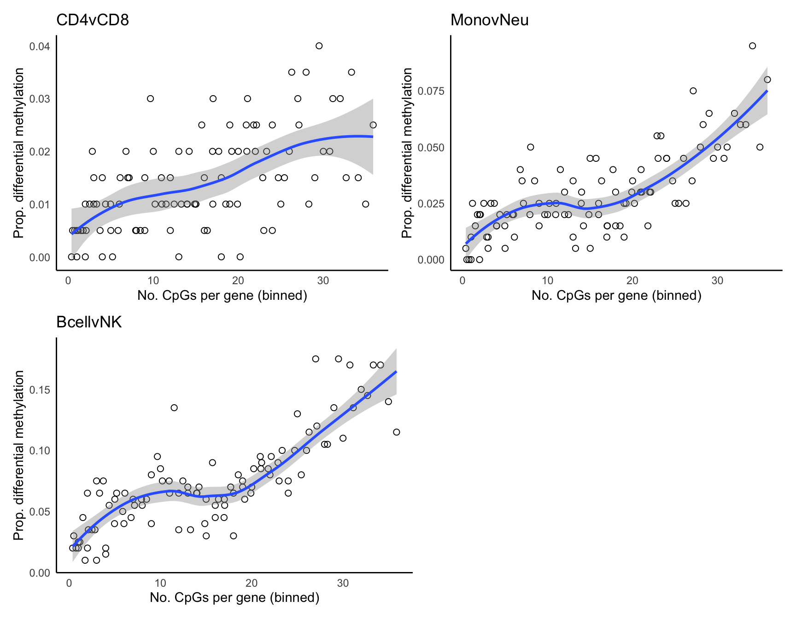
| Version | Author | Date |
|---|---|---|
| 555069b | JovMaksimovic | 2020-08-14 |
Save figure for use in manuscript.
fig <- here("output/figures/Fig-5A.rds")
saveRDS(p[[3]], fig, compress = FALSE)
fig <- here("output/figures/SFig-11A.rds")
saveRDS(p[[1]], fig, compress = FALSE)
fig <- here("output/figures/SFig-12A.rds")
saveRDS(p[[2]], fig, compress = FALSE)Compare GOregion with other approaches
immuneGO <- unique(read.csv(here("data/genesets/GO-immune-system-process.txt"),
stringsAsFactors = FALSE, header = FALSE,
col.names = "GOID"))
rnaseqGO <- readRDS(here("data/cache-rnaseq/RNAseq-GO.rds"))
rnaseqGO %>% group_by(contrast) %>%
mutate(rank = 1:n()) %>%
dplyr::filter(rank <= 100) -> topGOSets
dmrGo %>% arrange(contrast, method, P.DE) %>%
dplyr::filter(method %in% c("goana", "goregion-gometh")) %>%
mutate(method = unname((dict[method]))) %>%
group_by(contrast, method) %>%
mutate(rank = 1:n()) %>%
dplyr::filter(rank <= 100) -> dat
p <- vector("list", length(unique(dat$contrast)))
for(i in 1:length(p)){
cont <- sort(unique(dat$contrast))[i]
dat %>% dplyr::filter(contrast == cont) %>%
arrange(method, P.DE) %>%
group_by(method) %>%
mutate(csum = cumsum(GO %in% immuneGO$GOID)) %>%
mutate(truth = "ISP Terms") -> immuneSum
dat %>% dplyr::filter(contrast == cont) %>%
arrange(method, P.DE) %>%
group_by(method) %>%
mutate(csum = cumsum(GO %in% topGOSets$ID[topGOSets$contrast %in%
contrast])) %>%
mutate(truth = "RNAseq Terms") -> rnaseqSum
truthSum <- bind_rows(immuneSum, rnaseqSum)
p[[i]] <- ggplot(truthSum, aes(x = rank, y = csum, colour = method)) +
geom_line() +
facet_wrap(vars(truth)) +
geom_vline(xintercept = 10, linetype = "dotted") +
labs(colour = "Method", x = "Rank",
y = glue("Cumulative no. RNAseq sets")) +
theme(legend.position = "bottom") +
scale_color_manual(values = methodCols) +
ggtitle(cont)
}
p[[1]]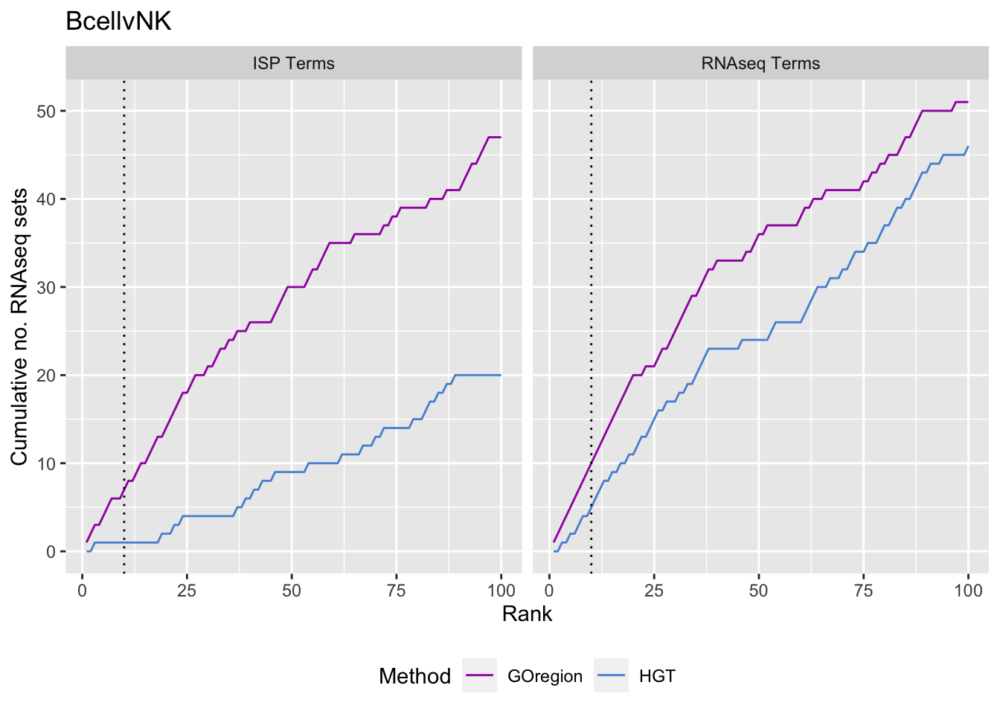
| Version | Author | Date |
|---|---|---|
| 555069b | JovMaksimovic | 2020-08-14 |
p[[2]]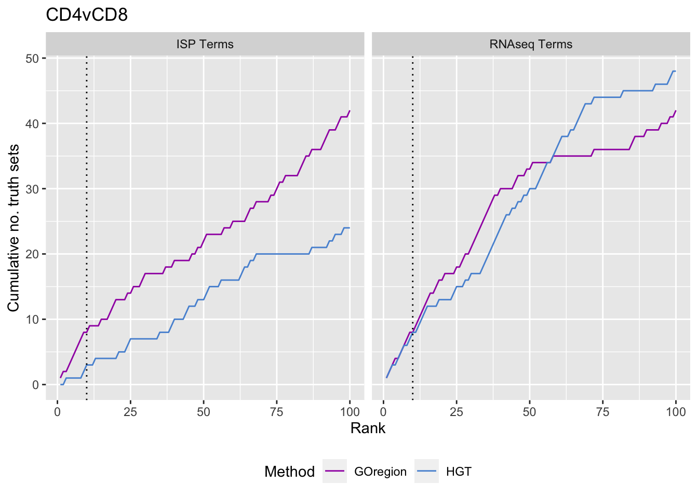
| Version | Author | Date |
|---|---|---|
| 555069b | JovMaksimovic | 2020-08-14 |
p[[3]]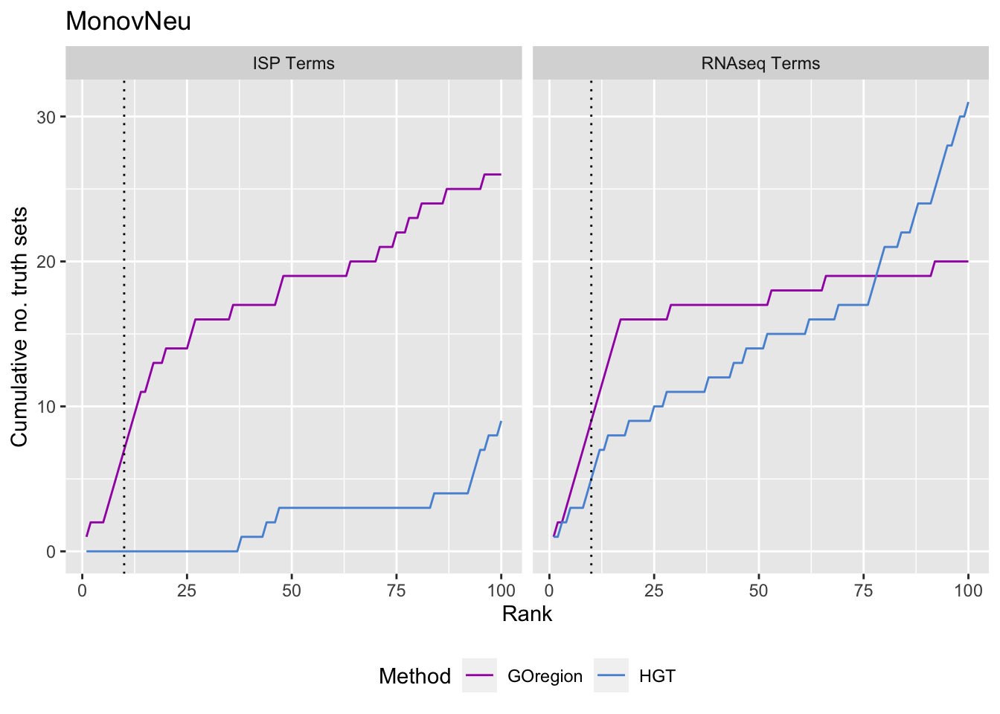
| Version | Author | Date |
|---|---|---|
| 555069b | JovMaksimovic | 2020-08-14 |
Save figure for use in manuscript.
fig <- here("output/figures/Fig-5C.rds")
saveRDS(p[[1]], fig, compress = FALSE)
fig <- here("output/figures/SFig-11B.rds")
saveRDS(p[[2]], fig, compress = FALSE)
fig <- here("output/figures/SFig-12B.rds")
saveRDS(p[[3]], fig, compress = FALSE)Examine what the top 10 ranked gene sets are and how many genes they contain, for each method and comparison.
terms <- missMethyl:::.getGO()$idTable
nGenes <- rownames_to_column(data.frame(n = sapply(missMethyl:::.getGO()$idList,
length)),
var = "ID")
dat %>% arrange(contrast, method, P.DE) %>%
group_by(contrast, method) %>%
mutate(FDR = p.adjust(P.DE, method = "BH")) %>%
dplyr::filter(rank <= 10) %>%
inner_join(terms, by = c("GO" = "GOID")) %>%
inner_join(nGenes, by = c("GO" = "ID")) -> subp <- vector("list", length(unique(sub$contrast)))
truthPal <- scales::hue_pal()(4)
names(truthPal) <- c("Both", "ISP", "Neither", "RNAseq")
for(i in 1:length(p)){
cont <- sort(unique(sub$contrast))[i]
sub %>% dplyr::filter(contrast == cont) %>%
arrange(method, -rank) %>%
ungroup() %>%
mutate(idx = as.factor(1:n())) -> tmp
setLabs <- substr(tmp$TERM, 1, 40)
names(setLabs) <- tmp$idx
tmp %>% mutate(rna = GO %in% topGOSets$ID[topGOSets$contrast %in% cont],
isp = GO %in% immuneGO$GOID,
both = rna + isp,
col = ifelse(both == 2, "Both",
ifelse(both == 1 & rna == 1, "RNAseq",
ifelse(both == 1 & isp == 1,
"ISP", "Neither")))) %>%
mutate(col = factor(col,
levels = c("Both", "ISP", "RNAseq",
"Neither"))) -> tmp
p[[i]] <- ggplot(tmp, aes(x = -log10(FDR), y = idx, colour = col)) +
geom_point(aes(size = n), alpha = 0.7) +
scale_size(limits = c(min(sub$n), max(sub$n))) +
facet_wrap(vars(method), ncol = 2, scales = "free") +
scale_y_discrete(labels = setLabs) +
scale_colour_manual(values = truthPal) +
labs(y = "", size = "No. genes", colour = "In truth set") +
theme(axis.text = element_text(size = 8),
legend.box = "vertical",
legend.position = "bottom",
legend.margin = margin(0, 0, 0, 0, unit = "lines"),
panel.spacing.x = unit(1, "lines")) +
coord_cartesian(xlim = c(-log10(0.99), -log10(10^-80))) +
geom_vline(xintercept = -log10(0.05), linetype = "dashed") +
ggtitle(cont)
}
shift_legend(p[[1]], plot = TRUE, pos = "left")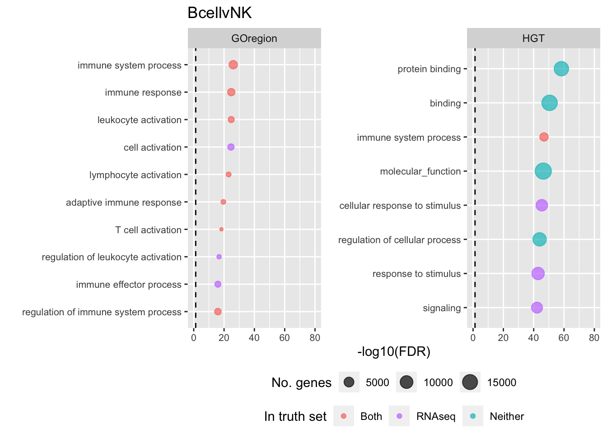
| Version | Author | Date |
|---|---|---|
| 555069b | JovMaksimovic | 2020-08-14 |
shift_legend(p[[2]], plot = TRUE, pos = "left")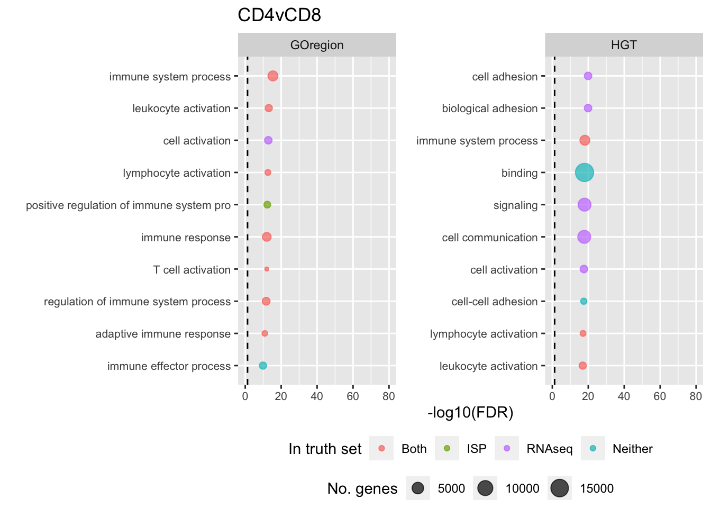
| Version | Author | Date |
|---|---|---|
| 555069b | JovMaksimovic | 2020-08-14 |
shift_legend(p[[3]], plot = TRUE, pos = "left")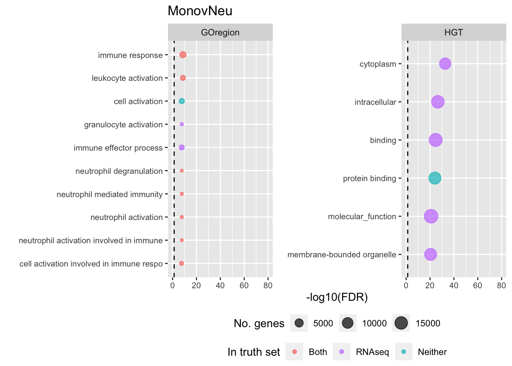
| Version | Author | Date |
|---|---|---|
| 555069b | JovMaksimovic | 2020-08-14 |
Save figure for use in manuscript.
fig <- here("output/figures/Fig-5D.rds")
saveRDS(p[[1]], fig, compress = FALSE)
fig <- here("output/figures/SFig-11C.rds")
saveRDS(p[[2]], fig, compress = FALSE)
fig <- here("output/figures/SFig-12C.rds")
saveRDS(p[[3]], fig, compress = FALSE)Compare GOregion with probe-wise analysis
dmrGo %>% dplyr::filter(method %in% c("goregion-gometh", "gometh-probe-top",
"gometh-probe-fdr")) %>%
mutate(method = unname((dict[method]))) %>%
arrange(contrast, method, P.DE) %>%
group_by(contrast, method) %>%
mutate(csum = cumsum(GO %in% immuneGO$GOID)) %>%
mutate(rank = 1:n()) %>%
dplyr::filter(rank <= 100) -> sub
p1 <- ggplot(sub, aes(x = rank, y = csum, colour = method)) +
geom_line() +
facet_wrap(vars(contrast), ncol=3) +
geom_vline(xintercept = 10, linetype = "dotted") +
labs(colour = "Method", x = "Rank", y = "Cumulative no. immune sets") +
theme(legend.position = "bottom") +
scale_color_manual(values = methodCols)dmrGo %>% dplyr::filter(method %in% c("goregion-gometh", "gometh-probe-top",
"gometh-probe-fdr")) %>%
mutate(method = unname((dict[method]))) %>%
arrange(contrast, method, P.DE) %>%
group_by(contrast, method) %>%
mutate(csum = cumsum(GO %in% topGOSets$ID[topGOSets$contrast %in%
contrast])) %>%
mutate(rank = 1:n()) %>%
dplyr::filter(rank <= 100) -> sub
p2 <- ggplot(sub, aes(x = rank, y = csum, colour = method)) +
geom_line() +
facet_wrap(vars(contrast), ncol=3, scales = "free_y") +
geom_vline(xintercept = 10, linetype = "dotted") +
labs(colour = "Method", x = "Rank", y = "Cumulative no. RNAseq sets") +
theme(legend.position = "bottom") +
scale_color_manual(values = methodCols)
p3 <- p1 / p2 +
plot_layout(guides = "collect") &
theme(legend.position = "bottom")
p3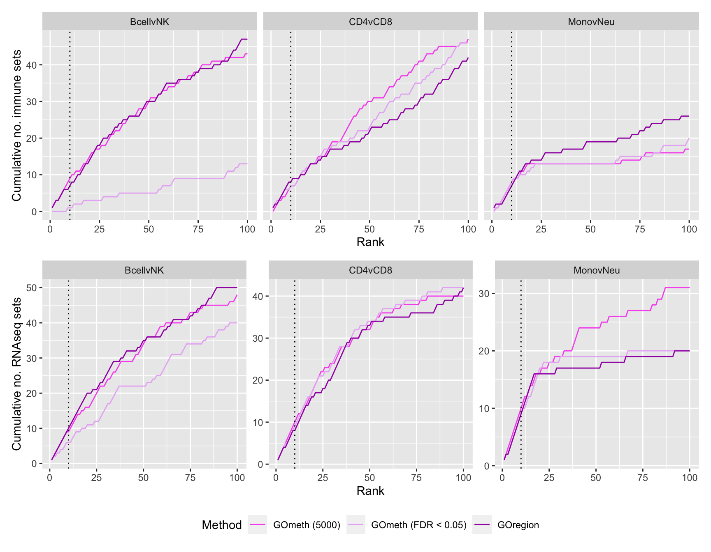
| Version | Author | Date |
|---|---|---|
| 555069b | JovMaksimovic | 2020-08-14 |
Save figure for use in manuscript.
fig <- here("output/figures/SFig-13A.rds")
saveRDS(p1, fig, compress = FALSE)
fig <- here("output/figures/SFig-13B.rds")
saveRDS(p2, fig, compress = FALSE)Examine what the top 10 ranked gene sets are and how many genes they contain, for each method and comparison.
terms <- missMethyl:::.getGO()$idTable
nGenes <- rownames_to_column(data.frame(n = sapply(missMethyl:::.getGO()$idList,
length)),
var = "ID")
dmrGo %>% dplyr::filter(method %in% c("goregion-gometh", "gometh-probe-top",
"gometh-probe-fdr")) %>%
mutate(method = unname((dict[method]))) %>%
arrange(contrast, method, P.DE) %>%
group_by(contrast, method) %>%
mutate(FDR = p.adjust(P.DE, method = "BH")) %>%
mutate(rank = 1:n()) %>%
dplyr::filter(rank <= 10) %>%
inner_join(terms, by = c("GO" = "GOID")) %>%
inner_join(nGenes, by = c("GO" = "ID")) -> subp <- vector("list", length(unique(sub$contrast)))
for(i in 1:length(p)){
cont <- sort(unique(sub$contrast))[i]
sub %>% dplyr::filter(contrast == cont) %>%
arrange(method, -rank) %>%
ungroup() %>%
mutate(idx = as.factor(1:n())) -> tmp
setLabs <- substr(tmp$TERM, 1, 40)
names(setLabs) <- tmp$idx
tmp %>% mutate(rna = GO %in% topGOSets$ID[topGOSets$contrast %in% cont],
isp = GO %in% immuneGO$GOID,
both = rna + isp,
col = ifelse(both == 2, "Both",
ifelse(both == 1 & rna == 1, "RNAseq",
ifelse(both == 1 & isp == 1,
"ISP", "Neither")))) %>%
mutate(col = factor(col,
levels = c("Both", "ISP", "RNAseq",
"Neither"))) -> tmp
p[[i]] <- ggplot(tmp, aes(x = -log10(FDR), y = idx, colour = col)) +
geom_point(aes(size = n), alpha = 0.7) +
scale_size(limits = c(min(sub$n), max(sub$n))) +
facet_wrap(vars(method), ncol = 2, scales = "free") +
scale_y_discrete(labels = setLabs) +
scale_color_manual(values = truthPal) +
labs(y = "", size = "No. genes", colour = "In truth set") +
theme(axis.text = element_text(size = 7),
legend.margin = margin(0, 0, 0, 0, unit = "lines"),
legend.box = "horizontal",
panel.spacing.x = unit(1, "lines")) +
coord_cartesian(xlim = c(-log10(0.99), -log10(10^-80))) +
geom_vline(xintercept = -log10(0.05), linetype = "dashed") +
ggtitle(cont)
}
shift_legend(p[[1]], plot = TRUE, pos = "left")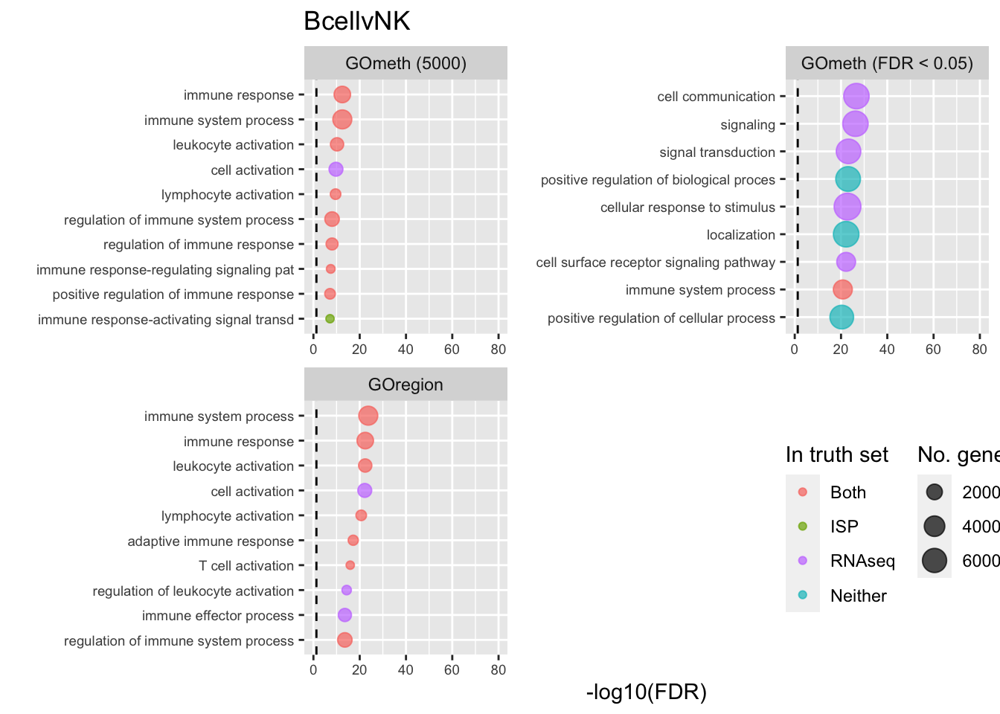
| Version | Author | Date |
|---|---|---|
| 555069b | JovMaksimovic | 2020-08-14 |
shift_legend(p[[2]], plot = TRUE, pos = "left")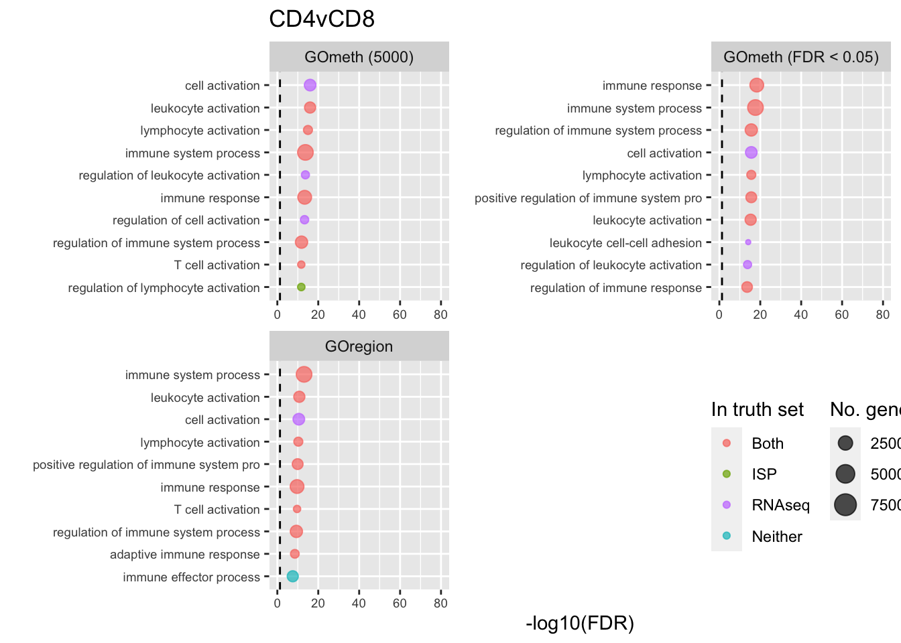
| Version | Author | Date |
|---|---|---|
| 555069b | JovMaksimovic | 2020-08-14 |
shift_legend(p[[3]], plot = TRUE, pos = "left")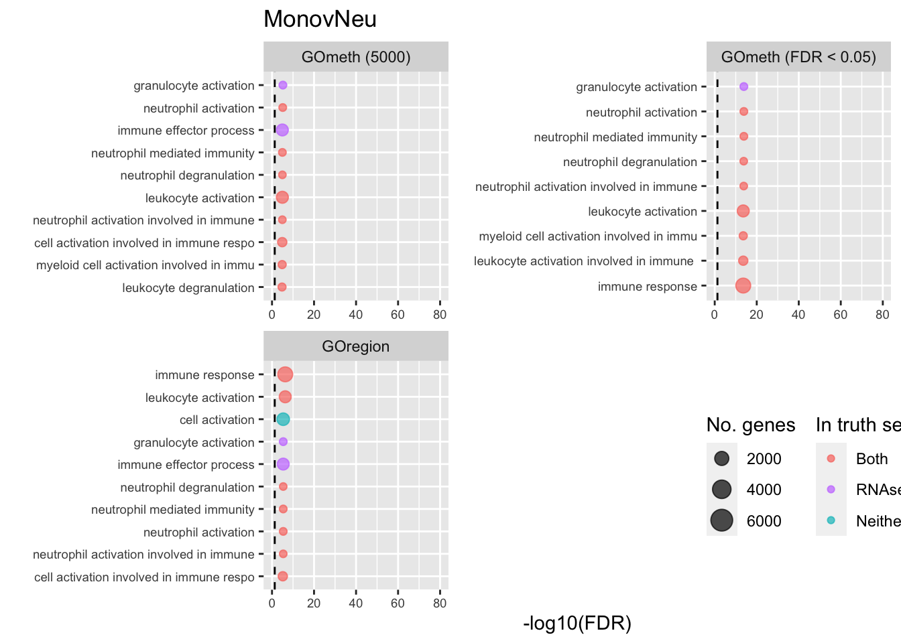
| Version | Author | Date |
|---|---|---|
| 555069b | JovMaksimovic | 2020-08-14 |
Save figure for use in manuscript.
fig <- here("output/figures/SFig-13C.rds")
saveRDS(shift_legend(p[[1]] + theme(plot.title = element_blank()),
pos = "left"),
fig, compress = FALSE)
fig <- here("output/figures/SFig-13D.rds")
saveRDS(shift_legend(p[[2]] + theme(plot.title = element_blank()),
pos = "left"),
fig, compress = FALSE)
fig <- here("output/figures/SFig-13E.rds")
saveRDS(shift_legend(p[[3]] + theme(plot.title = element_blank()),
pos = "left"),
fig, compress = FALSE)Compare characteristics of region-wise and probe-wise results
cpgs <- GRanges(seqnames = anno$chr,
ranges = IRanges(start = anno$pos,
end = anno$pos),
strand = anno$strand,
name = anno$Name)
dat <- NULL
for(i in 1:ncol(cont.matrix)){
keep <- (abs(dmrList[[i]]$meandiff) > 0.1 & dmrList[[i]]$no.cpgs >=3)
overlaps <- findOverlaps(cpgs, dmrList[[i]][keep,])
tmp <- data.frame(cpgs = cpgs$name[from(overlaps)],
method = "DMRcate",
contrast = colnames(cont.matrix)[i],
stringsAsFactors = FALSE)
dat <- bind_rows(dat, tmp)
tmp <- data.frame(cpgs = rownames(topTreat(tfit, coef = i, num = 5000)),
method = "Top 5000",
contrast = colnames(cont.matrix)[i],
stringsAsFactors = FALSE)
dat <- bind_rows(dat, tmp)
tmp <- data.frame(cpgs = rownames(topTreat(tfit, coef = i, num = Inf,
p.value = pval)),
method = "FDR < 0.05",
contrast = colnames(cont.matrix)[i],
stringsAsFactors = FALSE)
dat <- bind_rows(dat, tmp)
}
dat %>% group_by(contrast, method) %>%
tally() -> sub
selectCols <- c("#ff6b97", "#48bf8e", "#a41415")
names(selectCols) <- unique(dat$method)
ggplot(sub, aes(x = method, y = n, fill = method)) +
geom_bar(stat = "identity", show.legend = FALSE) +
facet_wrap(vars(contrast)) +
labs(y = "No. significant CpGs", x = "Sig. CpGs selected using") +
theme(axis.text.x = element_text(angle = 45, hjust = 1)) +
scale_fill_manual(values = selectCols)
| Version | Author | Date |
|---|---|---|
| 555069b | JovMaksimovic | 2020-08-14 |
flatAnn <- loadFlatAnnotation(anno)
dat %>% group_by(contrast, method) %>%
inner_join(flatAnn, by = c("cpgs" = "cpg")) %>%
group_by(contrast, method) %>%
dplyr::select(group_cols(), entrezid) %>%
distinct() %>%
tally() -> sub
ggplot(sub, aes(x = method, y = n, fill = method)) +
geom_bar(stat = "identity", show.legend = FALSE) +
facet_wrap(vars(contrast)) +
labs(y = "No. genes with sig. CpGs", x = "Sig. CpGs selected using") +
theme(axis.text.x = element_text(angle = 45, hjust = 1)) +
scale_fill_manual(values = selectCols)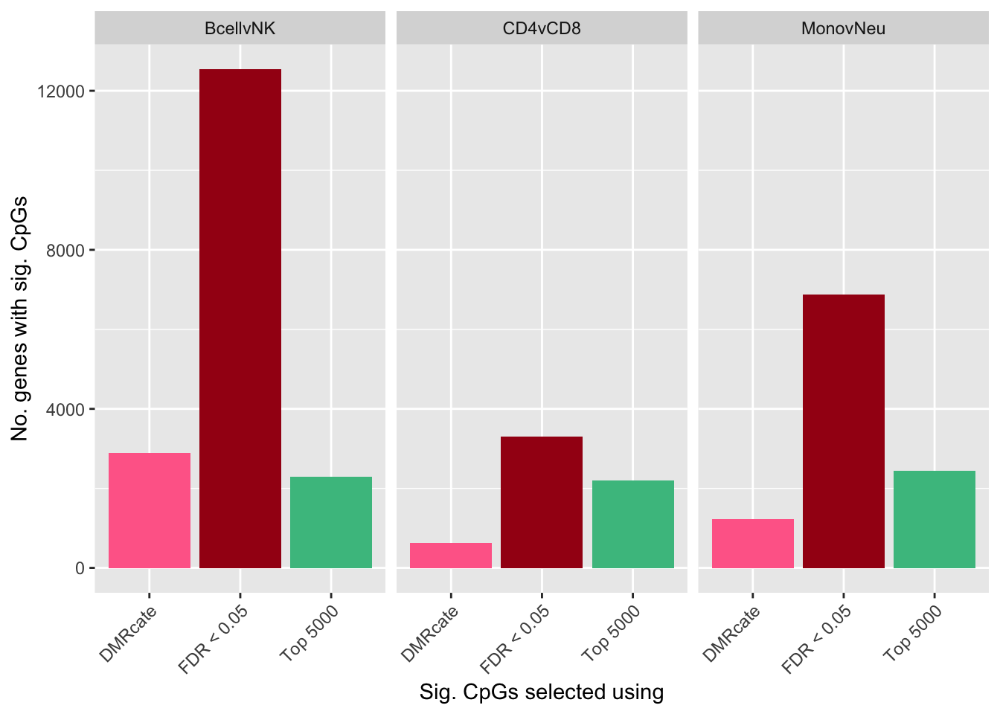
| Version | Author | Date |
|---|---|---|
| 555069b | JovMaksimovic | 2020-08-14 |
dat %>% group_by(contrast, method) %>%
left_join(flatAnn, by = c("cpgs" = "cpg")) %>%
group_by(contrast, method) %>%
dplyr::select(group_cols(), entrezid, cpgs) %>%
summarise(prop = sum(!is.na(entrezid[!duplicated(cpgs)]))/
length(unique(cpgs))) -> sub`summarise()` regrouping output by 'contrast' (override with `.groups` argument)p <- vector("list", length(unique(sub$contrast)))
for(i in 1:length(p)){
cont <- sort(unique(sub$contrast))[i]
p[[i]] <- ggplot(sub[sub$contrast == cont,],
aes(x = method, y = prop)) +
geom_bar(stat = "identity",
show.legend = FALSE,
fill="black") +
labs(y = "Prop. sig. CpGs mapped to genes",
x = "Sig. CpGs selected using") +
theme(axis.text.x = element_text(angle = 45, hjust = 1)) +
scale_x_discrete(limits = c("FDR < 0.05", "DMRcate", "Top 5000"))
}
p[[1]] + ggtitle(sort(unique(sub$contrast))[1]) |
p[[2]] + ggtitle(sort(unique(sub$contrast))[2]) |
p[[3]] + ggtitle(sort(unique(sub$contrast))[3])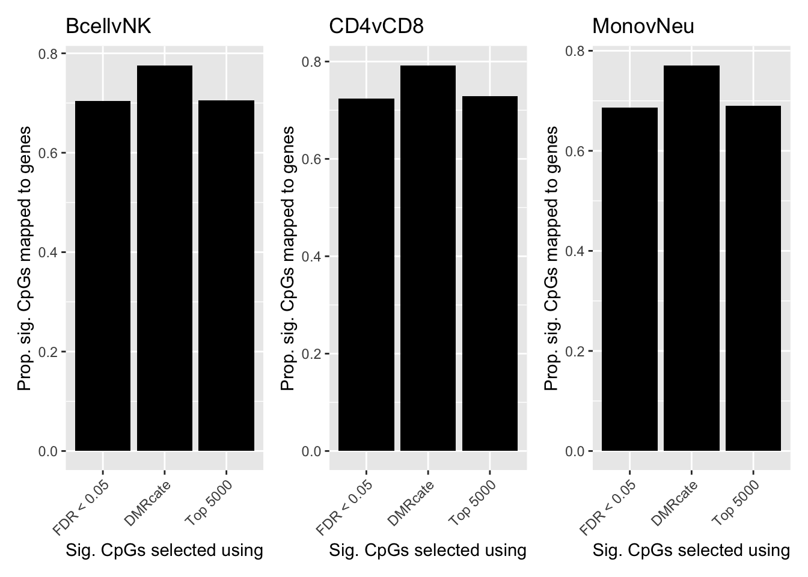
| Version | Author | Date |
|---|---|---|
| 555069b | JovMaksimovic | 2020-08-14 |
Save figure for use in manuscript.
fig <- here("output/figures/Fig-5F.rds")
saveRDS(p[[1]], fig, compress = FALSE)
fig <- here("output/figures/SFig-11E.rds")
saveRDS(p[[2]], fig, compress = FALSE)
fig <- here("output/figures/SFig-12E.rds")
saveRDS(p[[3]], fig, compress = FALSE)dat %>% group_by(contrast, method) %>%
left_join(flatAnn, by = c("cpgs" = "cpg")) %>%
group_by(contrast, method) %>%
dplyr::select(group_cols(), group, cpgs) %>%
group_by(contrast, method, group) %>%
tally() -> sub
ggplot(sub, aes(x = group, y = n, fill = method)) +
geom_bar(stat = "identity", position = "dodge") +
facet_wrap(vars(contrast), nrow = 3, ncol = 1, scales = "free_y") +
labs(fill = "Sig. CpGs selected using", y = "No. sig. CpGs mapped to genomic features",
x = "Feature") +
theme(axis.text.x = element_text(angle = 45, hjust = 1))
| Version | Author | Date |
|---|---|---|
| 555069b | JovMaksimovic | 2020-08-14 |
CpG overlap between region-wise and probe-wise approaches
Compare the CpGs covered by the different approaches, for the three contrasts.
p <- vector("list", ncol(cont.matrix))
d <- vector("list", length(p))
for(i in 1:length(p)){
cont <- sort(colnames(cont.matrix))[i]
dat %>% dplyr::filter(contrast == cont) %>%
dplyr::select(-contrast) %>%
group_by(cpgs) %>%
summarize(meth = list(method)) %>%
ggplot(aes(x = meth)) +
geom_bar() +
labs(y = "Intersection size", x = "") +
scale_x_upset(sets = c("FDR < 0.05", "DMRcate", "Top 5000")) +
theme(axis.title.y = element_text(size = 10)) -> int
dat %>% dplyr::filter(contrast == cont) %>%
group_by(contrast, method) %>%
tally() %>%
ggplot(aes(x = method, y = n)) +
geom_col(fill="black", position = "dodge") +
geom_text(aes(label = n),
position = position_dodge(0.9),
size = 1.5, hjust = 1.1, vjust = 0.5) +
labs(y = "Set size") +
scale_x_discrete(position = "top",
limits = c("Top 5000", "DMRcate", "FDR < 0.05")) +
scale_y_reverse(labels = scales::format_format(big.mark = " ",
decimal.mark = ".",
scientific = FALSE,
digits = 0),
expand = expansion(mult = c(0.6, 0))) +
coord_flip() +
theme_minimal() +
theme(legend.position = "none",
axis.title.y = element_blank(),
axis.title.x = element_text(size = 8),
axis.text.x = element_blank(),
axis.text.y = element_blank(),
panel.grid = element_blank(),
plot.margin = margin(0, 0, 0, 0,"cm")) -> sets
p[[i]] <- ggarrange(ggarrange(plotlist = list(NULL, sets, NULL),
nrow = 3, heights = c(2.5, 1, 0.1)), int,
ncol = 2,
widths = c(1, 3.5))
d[[i]] <- ggarrange(ggarrange(plotlist = list(NULL, sets, NULL),
nrow = 3, heights = c(4.75, 1, 0.1)), int,
ncol = 2,
widths = c(1, 3.5))
}`summarise()` ungrouping output (override with `.groups` argument)
`summarise()` ungrouping output (override with `.groups` argument)
`summarise()` ungrouping output (override with `.groups` argument)d[[1]] 
| Version | Author | Date |
|---|---|---|
| 555069b | JovMaksimovic | 2020-08-14 |
d[[2]]
| Version | Author | Date |
|---|---|---|
| 555069b | JovMaksimovic | 2020-08-14 |
d[[3]] 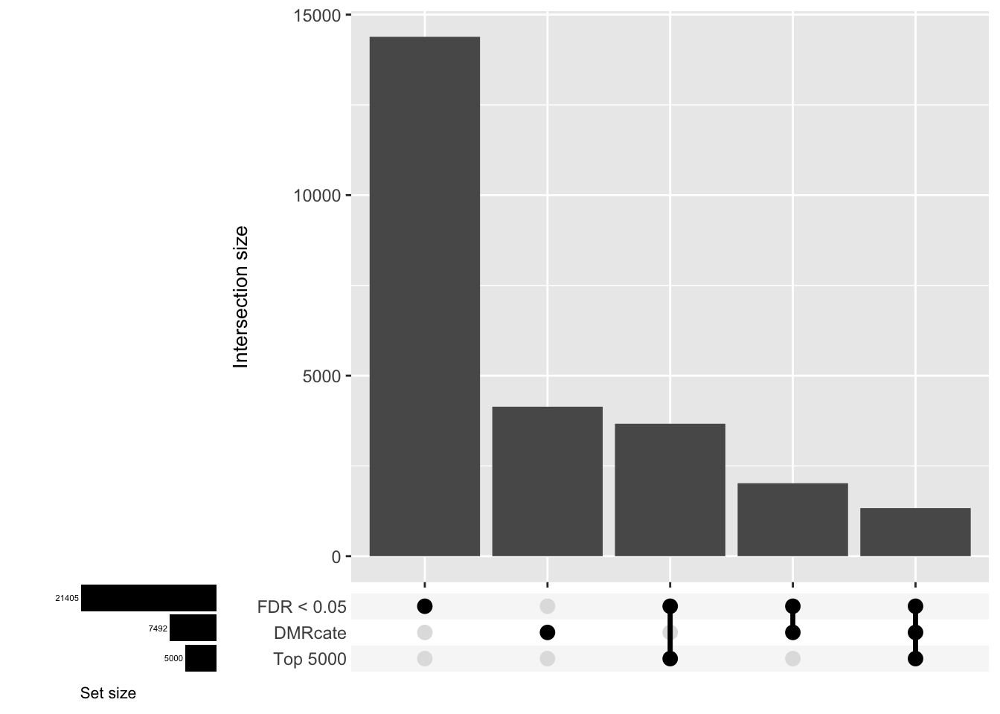
| Version | Author | Date |
|---|---|---|
| 555069b | JovMaksimovic | 2020-08-14 |
Save figure for use in manuscript.
fig <- here("output/figures/Fig-5E.rds")
saveRDS(p[[1]], fig, compress = FALSE)
fig <- here("output/figures/SFig-11D.rds")
saveRDS(p[[2]], fig, compress = FALSE)
fig <- here("output/figures/SFig-12D.rds")
saveRDS(p[[3]], fig, compress = FALSE)Gene overlap between region-wise and probe-wise approaches
Compare the genes covered by the different approaches, for the three contrasts.
p <- vector("list", ncol(cont.matrix))
d <- vector("list", length(p))
for(i in 1:length(p)){
cont <- sort(colnames(cont.matrix))[i]
dat %>% dplyr::filter(contrast == cont) %>%
left_join(flatAnn, by = c("cpgs" = "cpg")) %>%
dplyr::select(method, entrezid) %>%
distinct() %>%
group_by(entrezid) %>%
summarize(meth = list(method)) %>%
ggplot(aes(x = meth)) +
geom_bar() +
labs(y = "Intersection size", x = "") +
scale_x_upset(sets = c("FDR < 0.05", "DMRcate", "Top 5000")) +
theme(axis.title.y = element_text(size = 10)) -> int
dat %>% group_by(contrast, method) %>%
inner_join(flatAnn, by = c("cpgs" = "cpg")) %>%
group_by(contrast, method) %>%
dplyr::select(group_cols(), entrezid) %>%
distinct() %>%
dplyr::filter(contrast == cont) %>%
tally() %>%
ggplot(aes(x = method, y = n)) +
geom_col(fill="black", position = "dodge") +
geom_text(aes(label = n),
position = position_dodge(0.9),
size = 1.5, hjust = 1.1, vjust = 0.5) +
labs(y = "Set size") +
scale_x_discrete(position = "top",
limits = c("Top 5000", "DMRcate", "FDR < 0.05")) +
scale_y_reverse(labels = scales::format_format(big.mark = " ",
decimal.mark = ".",
scientific = FALSE,
digits = 0),
expand = expansion(mult = c(0.6, 0))) +
coord_flip() +
theme_minimal() +
theme(legend.position = "none",
axis.title.y = element_blank(),
axis.title.x = element_text(size = 9),
axis.text.x = element_blank(),
axis.text.y = element_blank(),
panel.grid = element_blank(),
plot.margin = margin(0, 0, 0, 0,"cm")) -> sets
p[[i]] <- ggarrange(ggarrange(plotlist = list(NULL, sets, NULL),
nrow = 3, heights = c(2.5, 1, 0.1)), int,
ncol = 2,
widths = c(1, 3.5))
d[[i]] <- ggarrange(ggarrange(plotlist = list(NULL, sets, NULL),
nrow = 3, heights = c(4.75, 1, 0.1)), int,
ncol = 2,
widths = c(1, 3.5))
}`summarise()` ungrouping output (override with `.groups` argument)
`summarise()` ungrouping output (override with `.groups` argument)
`summarise()` ungrouping output (override with `.groups` argument)d[[1]]
| Version | Author | Date |
|---|---|---|
| 555069b | JovMaksimovic | 2020-08-14 |
d[[2]]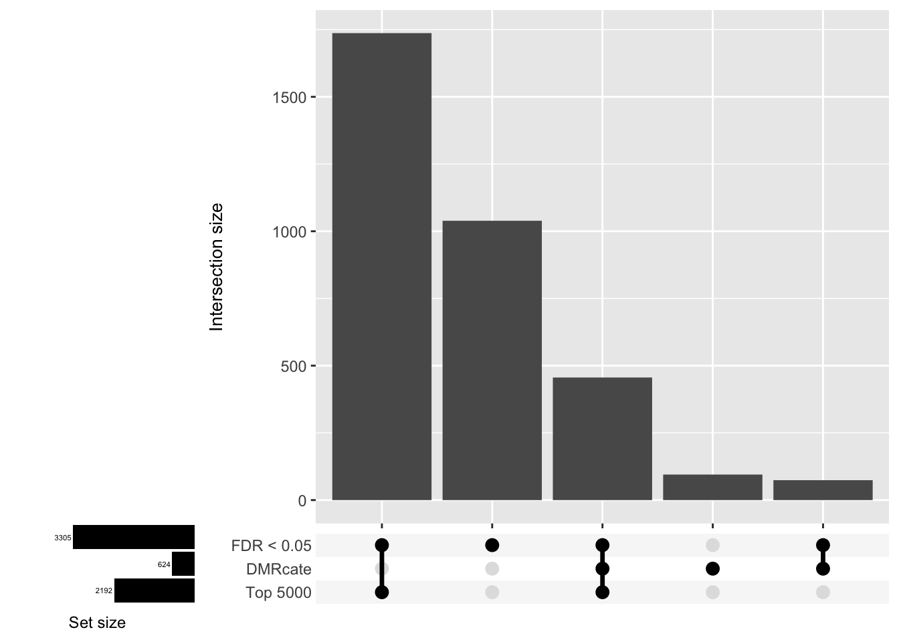
| Version | Author | Date |
|---|---|---|
| 555069b | JovMaksimovic | 2020-08-14 |
d[[3]]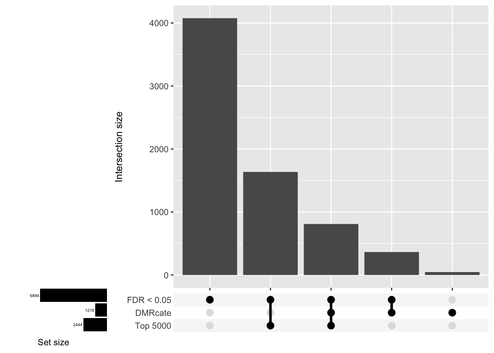
| Version | Author | Date |
|---|---|---|
| 555069b | JovMaksimovic | 2020-08-14 |
Save figure for use in manuscript.
fig <- here("output/figures/Fig-5G.rds")
saveRDS(p[[1]], fig, compress = FALSE)
fig <- here("output/figures/SFig-11F.rds")
saveRDS(p[[2]], fig, compress = FALSE)
fig <- here("output/figures/SFig-12F.rds")
saveRDS(p[[3]], fig, compress = FALSE)Effect of DMR cut offs i.e. num probes in region and absolute delta beta
outFile <- here("data/cache-region/dmrcate-params.rds")
dmrParams <- NULL
meanDiffs <- seq(0, 0.2, by = 0.1)
noCpgs <- 2:4
if(!file.exists(outFile)){
for(i in 1:length(dmrList)){
for(j in meanDiffs){
for(k in noCpgs){
keep <- (abs(dmrList[[i]]$meandiff) > j &
dmrList[[i]]$no.cpgs >= k)
tmp <- topGSA(goregion(dmrList[[i]][keep, ], anno = anno,
array.type = "EPIC"),
number = Inf)
tmp <- rownames_to_column(tmp, var = "GO")[, c("GO", "P.DE")]
tmp$params <- glue("|\u0394\u03B2| = {j}; No. CpGs = {k}")
tmp$contrast <- colnames(cont.matrix)[i]
dmrParams <- bind_rows(dmrParams, tmp)
}
}
}
saveRDS(dmrParams, file = outFile)
} else {
dmrParams <- readRDS(outFile)
}Examine effect of changing DMR parameter cut offs on gene set rankings of GO categories in "immune system process".
dmrParams %>% arrange(contrast, params, P.DE) %>%
group_by(contrast, params) %>%
mutate(csum = cumsum(GO %in% immuneGO$GOID)) %>%
mutate(rank = 1:n()) %>%
dplyr::filter(rank <= 100) -> dat
p1 <- ggplot(dat, aes(x = rank, y = csum, colour = params)) +
geom_line() +
facet_wrap(vars(contrast), ncol=3) +
geom_vline(xintercept = 10, linetype = "dotted") +
labs(colour = "Parameters", x = "Rank", y = "Cumulative no. immune sets")
p1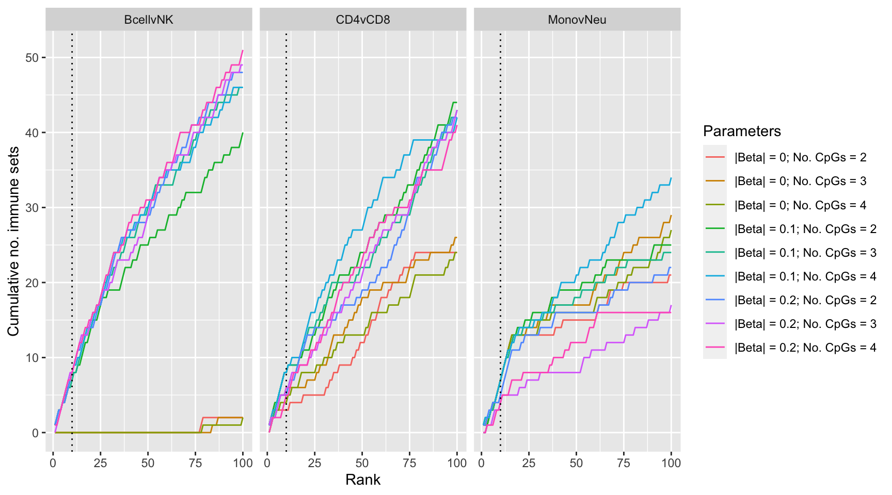
| Version | Author | Date |
|---|---|---|
| 555069b | JovMaksimovic | 2020-08-14 |
Examine effect of changing DMR parameter cut offs on gene set rankings on GO categories derived from RNAseq analysis.
dmrParams %>% arrange(contrast, params, P.DE) %>%
group_by(contrast, params) %>%
mutate(csum = cumsum(GO %in% topGOSets$ID[topGOSets$contrast %in% contrast])) %>%
mutate(rank = 1:n()) %>%
dplyr::filter(rank <= 100) -> sub
p2 <- ggplot(sub, aes(x = rank, y = csum, colour = params)) +
geom_line() +
facet_wrap(vars(contrast), ncol=3) +
geom_vline(xintercept = 10, linetype = "dotted") +
labs(colour = "Parameters", x = "Rank",
y = glue("Cumulative no. RNAseq sets"))
p2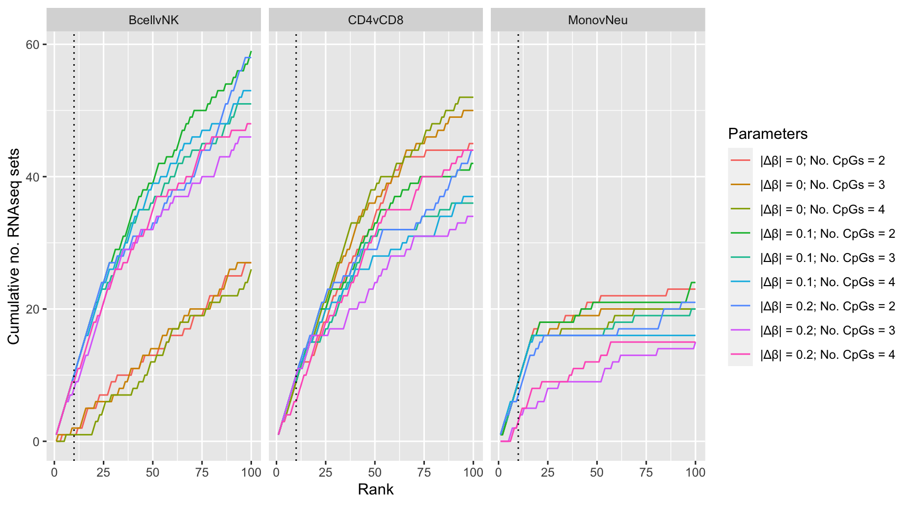
| Version | Author | Date |
|---|---|---|
| 555069b | JovMaksimovic | 2020-08-14 |
Save figure for use in manuscript.
fig <- here("output/figures/SFig-14A.rds")
saveRDS(p1, fig, compress = FALSE)
fig <- here("output/figures/SFig-14B.rds")
saveRDS(p2, fig, compress = FALSE)
sessionInfo()R version 3.6.3 (2020-02-29)
Platform: x86_64-apple-darwin15.6.0 (64-bit)
Running under: macOS Mojave 10.14.6
Matrix products: default
BLAS: /Library/Frameworks/R.framework/Versions/3.6/Resources/lib/libRblas.0.dylib
LAPACK: /Library/Frameworks/R.framework/Versions/3.6/Resources/lib/libRlapack.dylib
locale:
[1] en_AU.UTF-8/en_AU.UTF-8/en_AU.UTF-8/C/en_AU.UTF-8/en_AU.UTF-8
attached base packages:
[1] grid stats4 parallel stats graphics grDevices utils
[8] datasets methods base
other attached packages:
[1] TxDb.Hsapiens.UCSC.hg19.knownGene_3.2.2
[2] GenomicFeatures_1.38.2
[3] ggpubr_0.4.0
[4] ggupset_0.3.0
[5] tibble_3.0.3
[6] patchwork_1.0.1
[7] dplyr_1.0.0
[8] UpSetR_1.4.0
[9] glue_1.4.1
[10] ggplot2_3.3.2
[11] missMethyl_1.20.4
[12] reshape2_1.4.4
[13] paletteer_1.2.0
[14] ChAMP_2.16.2
[15] DT_0.14
[16] IlluminaHumanMethylationEPICmanifest_0.3.0
[17] Illumina450ProbeVariants.db_1.22.0
[18] DMRcate_2.0.7
[19] FEM_3.14.0
[20] graph_1.64.0
[21] org.Hs.eg.db_3.10.0
[22] impute_1.60.0
[23] igraph_1.2.5
[24] corrplot_0.84
[25] marray_1.64.0
[26] limma_3.42.2
[27] Matrix_1.2-18
[28] AnnotationDbi_1.48.0
[29] ChAMPdata_2.18.0
[30] minfi_1.32.0
[31] bumphunter_1.28.0
[32] locfit_1.5-9.4
[33] iterators_1.0.12
[34] foreach_1.5.0
[35] Biostrings_2.54.0
[36] XVector_0.26.0
[37] SummarizedExperiment_1.16.1
[38] DelayedArray_0.12.3
[39] BiocParallel_1.20.1
[40] matrixStats_0.56.0
[41] Biobase_2.46.0
[42] GenomicRanges_1.38.0
[43] GenomeInfoDb_1.22.1
[44] IRanges_2.20.2
[45] S4Vectors_0.24.4
[46] BiocGenerics_0.32.0
[47] here_0.1
[48] workflowr_1.6.2
loaded via a namespace (and not attached):
[1] Hmisc_4.4-0
[2] Rsamtools_2.2.3
[3] rprojroot_1.3-2
[4] crayon_1.3.4
[5] MASS_7.3-51.6
[6] nlme_3.1-148
[7] backports_1.1.8
[8] sva_3.34.0
[9] rlang_0.4.7
[10] readxl_1.3.1
[11] DSS_2.34.0
[12] globaltest_5.40.0
[13] bit64_0.9-7.1
[14] isva_1.9
[15] rngtools_1.5
[16] methylumi_2.32.0
[17] haven_2.3.1
[18] tidyselect_1.1.0
[19] rio_0.5.16
[20] XML_3.99-0.3
[21] nleqslv_3.3.2
[22] tidyr_1.1.0
[23] GenomicAlignments_1.22.1
[24] xtable_1.8-4
[25] magrittr_1.5
[26] evaluate_0.14
[27] zlibbioc_1.32.0
[28] rstudioapi_0.11
[29] doRNG_1.8.2
[30] whisker_0.4
[31] rpart_4.1-15
[32] ensembldb_2.10.2
[33] IlluminaHumanMethylationEPICanno.ilm10b4.hg19_0.6.0
[34] shiny_1.5.0
[35] xfun_0.15
[36] askpass_1.1
[37] clue_0.3-57
[38] multtest_2.42.0
[39] cluster_2.1.0
[40] interactiveDisplayBase_1.24.0
[41] base64_2.0
[42] biovizBase_1.34.1
[43] scrime_1.3.5
[44] dendextend_1.13.4
[45] png_0.1-7
[46] permute_0.9-5
[47] reshape_0.8.8
[48] withr_2.2.0
[49] lumi_2.38.0
[50] bitops_1.0-6
[51] plyr_1.8.6
[52] cellranger_1.1.0
[53] AnnotationFilter_1.10.0
[54] JADE_2.0-3
[55] pillar_1.4.6
[56] fs_1.4.2
[57] DelayedMatrixStats_1.8.0
[58] vctrs_0.3.2
[59] ellipsis_0.3.1
[60] generics_0.0.2
[61] tools_3.6.3
[62] foreign_0.8-76
[63] munsell_0.5.0
[64] fastmap_1.0.1
[65] compiler_3.6.3
[66] abind_1.4-5
[67] httpuv_1.5.4
[68] rtracklayer_1.46.0
[69] geneLenDataBase_1.22.0
[70] ExperimentHub_1.12.0
[71] lemon_0.4.5
[72] beanplot_1.2
[73] Gviz_1.30.3
[74] plotly_4.9.2.1
[75] GenomeInfoDbData_1.2.2
[76] gridExtra_2.3
[77] DNAcopy_1.60.0
[78] edgeR_3.28.1
[79] lattice_0.20-41
[80] later_1.1.0.1
[81] BiocFileCache_1.10.2
[82] jsonlite_1.7.0
[83] affy_1.64.0
[84] scales_1.1.1
[85] carData_3.0-4
[86] genefilter_1.68.0
[87] lazyeval_0.2.2
[88] promises_1.1.1
[89] car_3.0-8
[90] doParallel_1.0.15
[91] latticeExtra_0.6-29
[92] R.utils_2.9.2
[93] goseq_1.38.0
[94] checkmate_2.0.0
[95] rmarkdown_2.3
[96] openxlsx_4.1.5
[97] nor1mix_1.3-0
[98] cowplot_1.0.0
[99] statmod_1.4.34
[100] siggenes_1.60.0
[101] forcats_0.5.0
[102] dichromat_2.0-0
[103] BSgenome_1.54.0
[104] HDF5Array_1.14.4
[105] bsseq_1.22.0
[106] survival_3.2-3
[107] yaml_2.2.1
[108] htmltools_0.5.0
[109] memoise_1.1.0
[110] VariantAnnotation_1.32.0
[111] quadprog_1.5-8
[112] viridisLite_0.3.0
[113] digest_0.6.25
[114] assertthat_0.2.1
[115] mime_0.9
[116] rappdirs_0.3.1
[117] BiasedUrn_1.07
[118] RSQLite_2.2.0
[119] data.table_1.12.8
[120] blob_1.2.1
[121] R.oo_1.23.0
[122] preprocessCore_1.48.0
[123] fastICA_1.2-2
[124] shinythemes_1.1.2
[125] splines_3.6.3
[126] Formula_1.2-3
[127] labeling_0.3
[128] rematch2_2.1.2
[129] Rhdf5lib_1.8.0
[130] illuminaio_0.28.0
[131] AnnotationHub_2.18.0
[132] ProtGenerics_1.18.0
[133] RCurl_1.98-1.2
[134] broom_0.7.0
[135] hms_0.5.3
[136] rhdf5_2.30.1
[137] colorspace_1.4-1
[138] base64enc_0.1-3
[139] BiocManager_1.30.10
[140] nnet_7.3-14
[141] GEOquery_2.54.1
[142] Rcpp_1.0.5
[143] mclust_5.4.6
[144] R6_2.4.1
[145] lifecycle_0.2.0
[146] acepack_1.4.1
[147] zip_2.0.4
[148] curl_4.3
[149] kpmt_0.1.0
[150] ggsignif_0.6.0
[151] affyio_1.56.0
[152] RPMM_1.25
[153] qvalue_2.18.0
[154] ROC_1.62.0
[155] RColorBrewer_1.1-2
[156] IlluminaHumanMethylationEPICanno.ilm10b2.hg19_0.6.0
[157] stringr_1.4.0
[158] IlluminaHumanMethylation450kmanifest_0.4.0
[159] htmlwidgets_1.5.1
[160] biomaRt_2.42.1
[161] purrr_0.3.4
[162] mgcv_1.8-31
[163] openssl_1.4.2
[164] htmlTable_2.0.1
[165] codetools_0.2-16
[166] IlluminaHumanMethylation450kanno.ilmn12.hg19_0.6.0
[167] GO.db_3.10.0
[168] gtools_3.8.2
[169] prettyunits_1.1.1
[170] dbplyr_1.4.4
[171] R.methodsS3_1.8.0
[172] gtable_0.3.0
[173] DBI_1.1.0
[174] git2r_0.27.1
[175] wateRmelon_1.30.0
[176] httr_1.4.2
[177] KernSmooth_2.23-17
[178] stringi_1.4.6
[179] progress_1.2.2
[180] farver_2.0.3
[181] annotate_1.64.0
[182] viridis_0.5.1
[183] xml2_1.3.2
[184] combinat_0.0-8
[185] readr_1.3.1
[186] BiocVersion_3.10.1
[187] bit_1.1-15.2
[188] jpeg_0.1-8.1
[189] pkgconfig_2.0.3
[190] ruv_0.9.7.1
[191] rstatix_0.6.0
[192] knitr_1.29